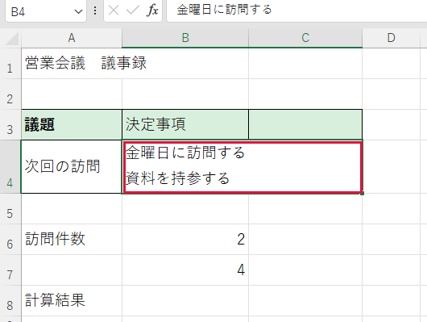

セル内で改行したい
決定事項と補足を同じマスに収めたいときに使います。
操作手順
- 文章の入った欄をダブルクリックします。文字の中にカーソルが出ます。
- 改行したい文字の手前をクリックします。そこで縦線が点滅します。
- Alt を押したまま Enter を押します。縦線が同じ欄の次の行に移ります。
- 続きを入力して Enter で確定します。


できたか確認
同じ欄に二行とも表示されていますか。
注意点
二行目が見えないときは、行の高さも確認してください。
決定事項と補足を同じマスに収めたいときに使います。

同じ欄に二行とも表示されていますか。
二行目が見えないときは、行の高さも確認してください。